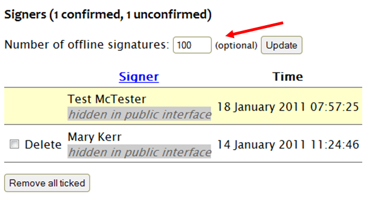
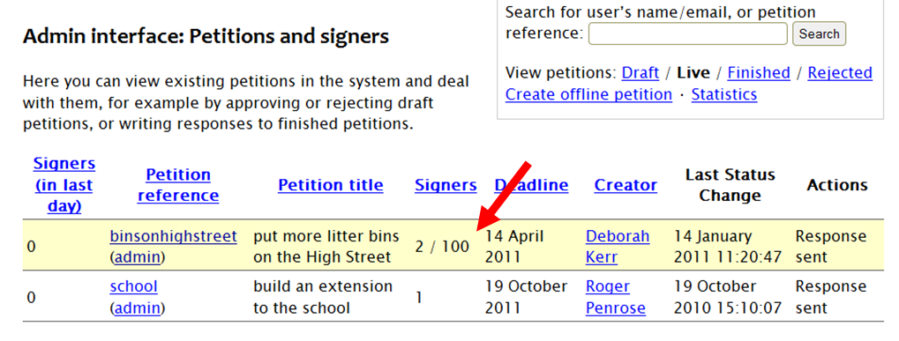
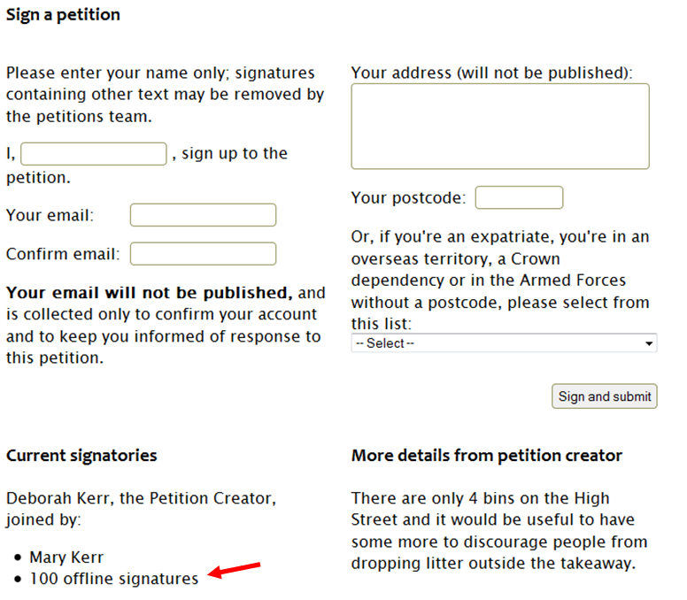

To add offline signatures
A petition creator may also be gathering signatures on paper, i.e., ‘offline’. It is possible to add the number of these offline signatories to the total of the online petition.
To add offline signatures, enter the total number in the ‘Number of offline signatures’ box on the relevant petition’s admin page, and then click ‘Update’:
You can change the number of offline signatures at a later date, if you need to. When doing this, you should always enter the new total: e.g. if there are already 100, and you have 35 more, enter 135.
The total of offline signatures is shown in the admin interface petitions list, after the number of online signatures. In the example below there are 2 online signatures and 100 offline signatures for the ‘binsonhighstreet’ petition, shown as ‘2/100’.
The number of offline signatures is also shown on the public petitions webpage, underneath the list of online signers:
